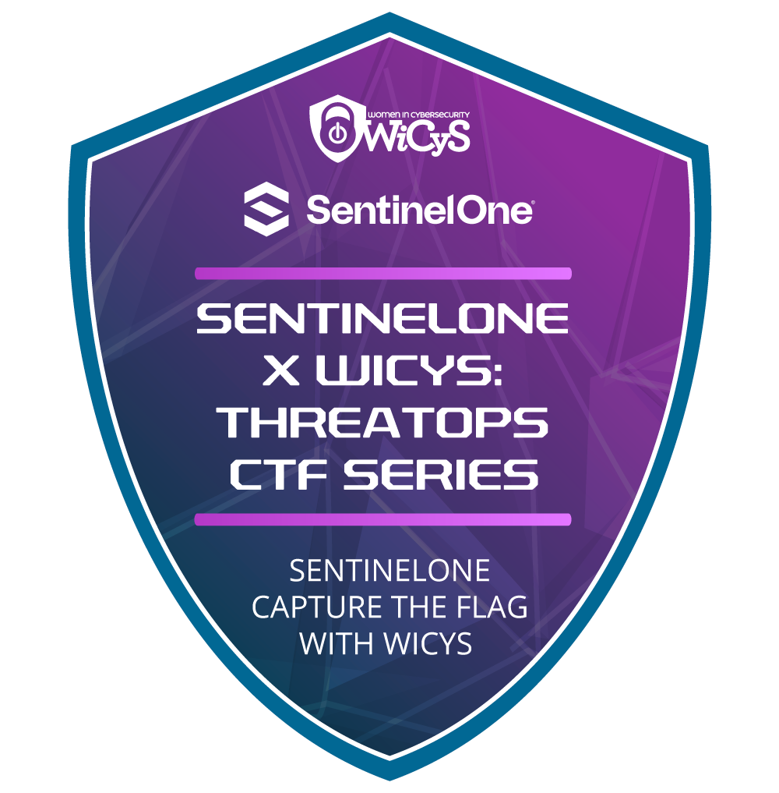

SentinelOne × WiCyS ThreatOps CTF Series 2026
Final Score: 850 Points
Participated in my first cybersecurity Capture the Flag challenge, gaining hands-on exposure to security investigations, alert analysis, and threat detection.


Final Score: 850 Points
Participated in my first cybersecurity Capture the Flag challenge, gaining hands-on exposure to security investigations, alert analysis, and threat detection.
